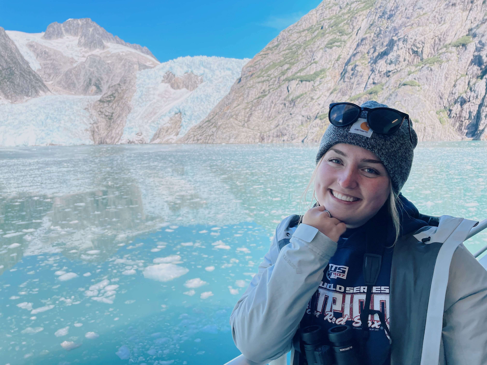
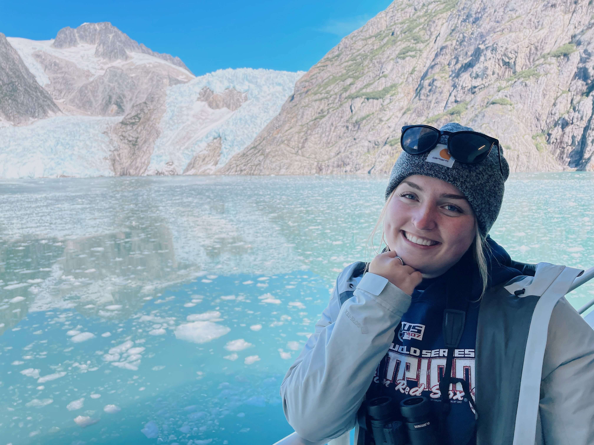

Welcome
I’m a marine ecologist using quantitative tools and long-term datasets to understand how species and ecosystems respond to rapid environmental change.
Marine Ecologist | Data-Driven Conservation
I’m a marine ecologist using quantitative tools and long-term datasets to understand how species and ecosystems respond to rapid environmental change.
